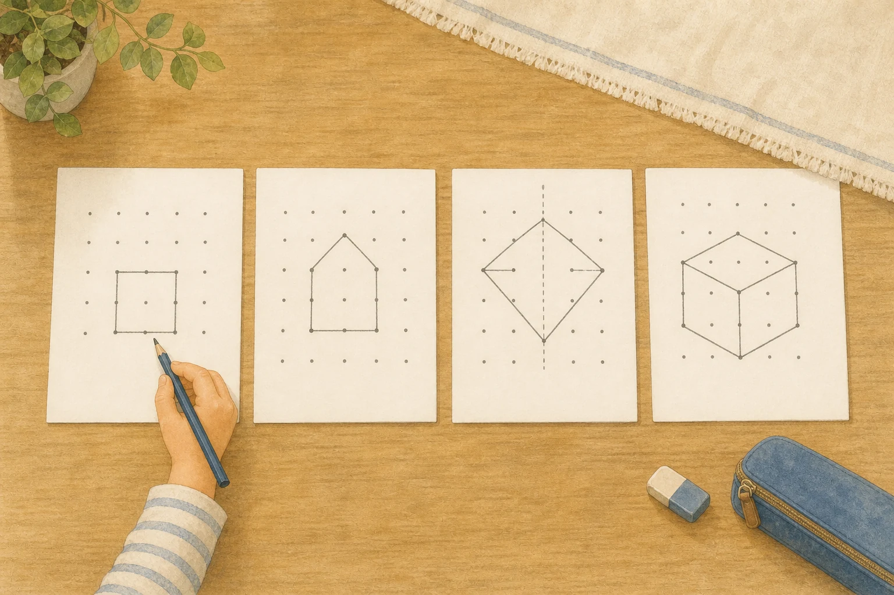

中央寄せフローティング
初回案内・レベル選び向け。画面上端から約42%、幅は左右15px余白、背景オーバーレイなし。画像は102×124pxを基準にします。
TENZU · ONSITE MESSAGING · MOBILE FIRST · 2026-08-24
現行の「画面下部・64px画像・本文・リンク」を土台に、見つけやすさを上げつつ、TENZUの「煽らない・邪魔しない」を守る設定案です。管理画面の入力とユーザー画面の反映を同じページで確認できます。
初回案内・レベル選びは中央寄せ、カート通知は下部、操作ヒントは文脈内。1つの位置に統一しないのが最も自然です。
現行の下部カードは間違いではありません。ただ、スマホではブラウザの下部UIや固定操作バーと重なりやすく、TENZUの主訴求を見せるには弱い。用途別に3つへ分けます。
初回案内・レベル選び向け。画面上端から約42%、幅は左右15px余白、背景オーバーレイなし。画像は102×124pxを基準にします。
カートの事実通知に残します。親指で押しやすい一方、固定フッターと競合するため、safe areaと既存バーの高さを必ず加算します。
メーカーの使い方ヒントや記事内の関連案内向け。読み物・操作を覆わず、表示理由が最も伝わりやすい方式です。
左の設定を変更すると右のスマホ画面へ即時反映されます。まず「初回案内」の推奨値を表示しています。
画面上端から42%・背景は暗くしない・本文操作は継続できます。
模写から対称・回転・立体まで。今の地点に合う一枚を、中身を見て選べます。

模写から少しずつ、かたちの見え方を広げます。
中央寄せでも背景を暗くしないため、サイト本体を読み続けられます。カード高は画面の約2割に留めます。
中央は目立ちますが、全面を塞ぐとGoogleが避けるよう求める侵入的インタースティシャルに近づきます。TENZUでは「位置は中央・振る舞いはバナー」が落としどころです。
主推奨
通知向け
補助推奨
現行5本を増やすより、まず発火条件と表示位置を合わせます。「初回訪問から3秒」は早すぎるので、閲覧行動を組み合わせます。
| キャンペーン | 位置 / 画像 | 表示条件 | 頻度 | 推奨コピー | 主KPI |
|---|---|---|---|---|---|
| welcome-2026 初回案内 | 中央寄せ 画像あり | 10秒以上 ＋ 35%スクロール 検索流入の着地直後は出さない | 1キャンペーン1回 | 中身を見てから選べます TENZUのプリントは、全問を購入前にご覧いただけます。 プリントの中身を見る | CTA率 → 商品閲覧 |
| guide-nudge レベル選び | 中央寄せ 画像あり | 商品一覧で30秒以上 ＋ 2商品以上閲覧 または同じ一覧を上下に再スクロール | 閉じたら30日後 最大2回 | はじめる位置に迷ったら 今の様子から選ぶ目安を、短いガイドにまとめています。 レベル選びガイドを見る | ガイド開始 → 完了 |
| cart-keep カート通知 | 下部固定 画像なし | カートありで次の内部ページへ移動 または次回訪問時 visibility復帰直後は避ける | 7日ごと・最大2回 購入で終了 | カートに1巻入っています 続きは、いつでもカートから確認できます。 カートを見る | カート復帰 → 購入 |
| maker-hint 操作ヒント | 文脈内 画像なし | PDF出力前に操作が30秒停止 対象操作の直後へ挿入 | 1回 | 練習は紙で 作った問題はPDFにして、そのまま印刷できます。 CTAなし | PDF生成 |
| spring-lp-2027 季節特集 | 中央寄せ 季節画像あり | 関連記事を40%閲覧 1〜3月のみ・公開翌日から | 1シーズン1回 | 春の7枚をまとめました 形と位置の練習を、はじめやすい順に選べます。 春の特集を見る | 特集閲覧 → サンプル |
現行管理画面は文言・画像・ページ・トリガー・統計まで揃っています。次に効くのはキャンペーン数ではなく、スマホでの見え方と表示理由を制御する機能です。
スマホは「中央寄せ / 下部 / 文脈内」、PCは「右下 / 文脈内」を選択。画像の有無・比率も端末別にします。
390px / 375px / PCを切り替え、本文の折返し・safe area・既存固定バーとの衝突を保存前に確認します。
現行は本文だけ。画像・本文・リンクを流し読みされないよう、14〜18字の見出しを追加します。本文との役割を分けます。
「秒数だけ」でなく、スクロール率・商品閲覧数・カート保有・ページ移動をAND/ORで組めるようにします。
春キャンペーンを手動でON/OFFせず、JSTで開始・終了。終了後は自動停止し、過去設定は残します。
クリック済みは終了、×で閉じたら30日休止、表示だけなら7日後にあと1回など、閲覧・閉じる・クリックを分けます。
表示・クリック・閉じるだけでなく、ガイド完了・サンプル閲覧・PDF生成・購入まで管理画面で接続します。
文字数、リンク切れ、alt、タップ領域、画面占有率、同時配信の競合、NG語彙をまとめて警告します。
本格A/B基盤ではなく、中央寄せと下部を2週間ずつ比較する期間テスト。購入など下流成果で判断します。
×だけでなく「あとで見る」を用意し、閉じると拒否を分けます。再表示はユーザーが選んだ時だけにします。
中央寄せへ変える場合は、位置だけ変えて終わりにせず、カードの占有率・閉じ方・フォーカス・計測をセットで直します。
headline?: string
layout?: {
mobile: "floating" | "bottom" | "inline"
desktop: "corner" | "inline"
imageVariant: "side" | "none"
}
conditions?: {
minVisibleSec?: number
minScrollPct?: number
minProductViews?: number
schedule?: { startAt: string; endAt: string }
}
frequency?: {
onView: "lifetime" | "7d"
onDismiss: "lifetime" | "30d"
maxImpressions: 1 | 2
}
特定ツールの売り文句ではなく、検索・アクセシビリティの公式資料と大規模ECユーザビリティ調査を優先しました。